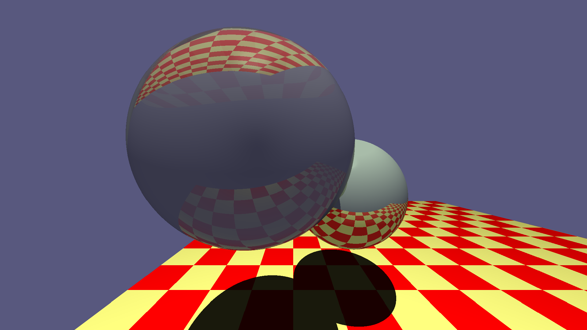
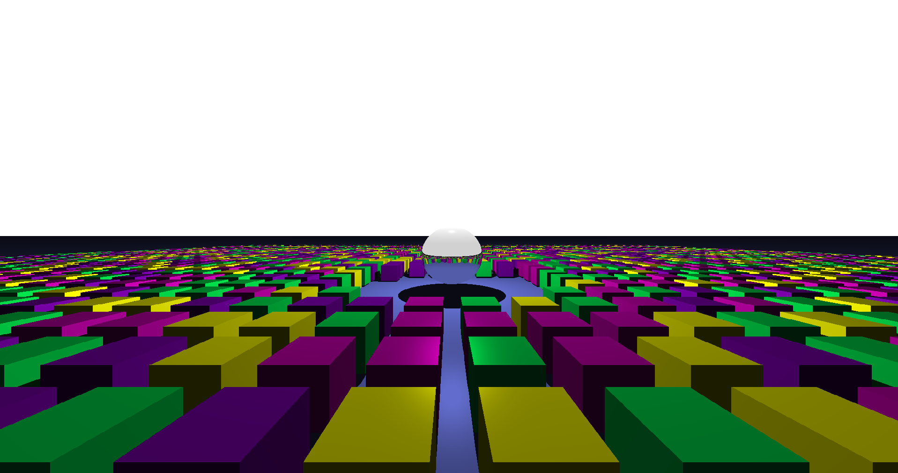
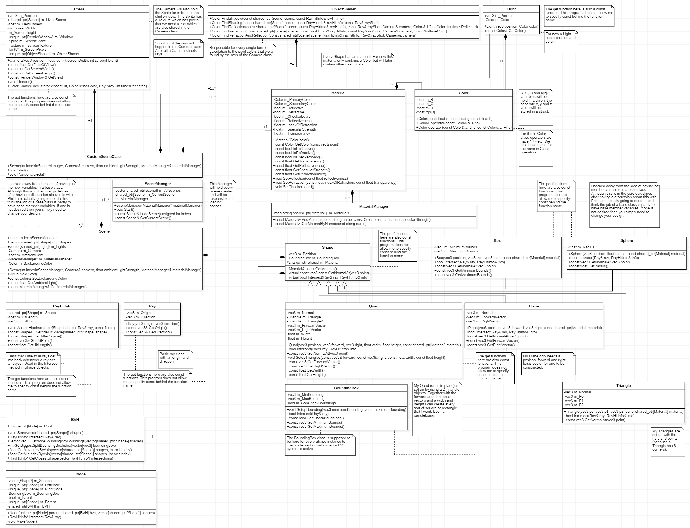

The first reference image showed us the use of reflection, refraction and a checkerboard quad was also used in the image. Here one can see the outcome of this reference image in my raytracer.

The second reference image showed us a lot of cubes and a reflective sphere in the middle. The challenge in this image was to render the image in as less time as possible since because there are a lot of cubes the raytracer itself had to do a lot of ray calculations against every object in the scene. The asked solution to this rendering problem was to implement a BVH (Bounding Volume Hierarchy) system which decreases the rendering time since less raytracer calculations against objects are made when a BVH system is implemented. I implemented this system and the result of this reference image in my raytracer is shown here.

I focused heavily on system design for this Raytracer where I tried to be as detailed as possible when creating the UML for the system architecture of this Raytracer. The UML for this Raytracer is shown here.

I learned what a raytracer is and everything that comes with the implementation of a raytracer. Because of this I can say that I learned everything that I did in this project.
{% endblock project_specific %}